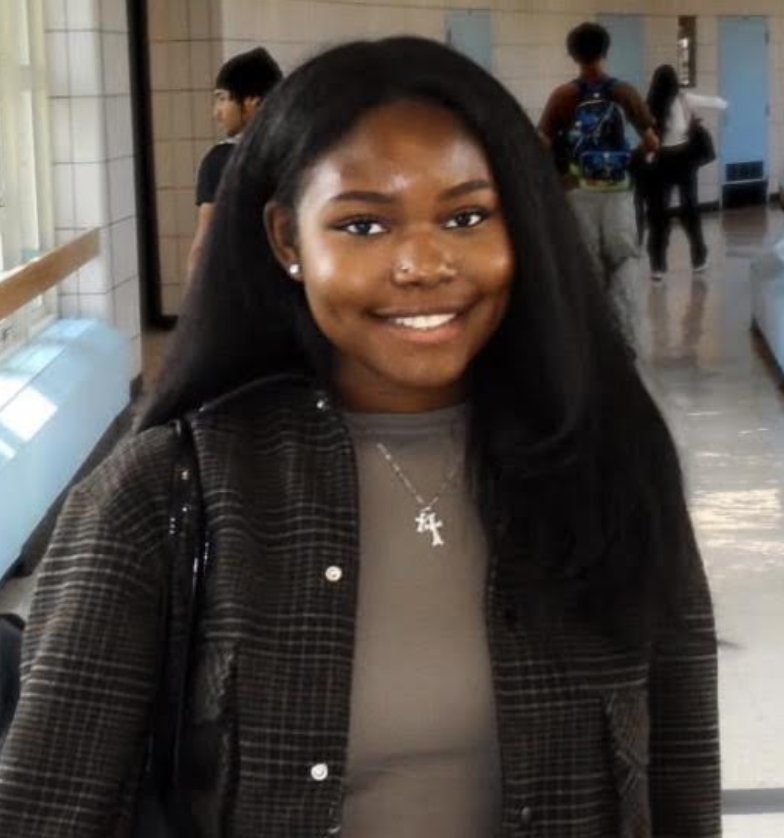

Britney Arnold
Thomas A Edison CTE highschool
Hello! My name is Britney Keana Arnold and I am a senior at Thomas A Edison Career and Technical High School graduating in 2027 to further pursue psychology . Actively participating in HOSA, where members gain hands-on experience in health fields such as nursing and emergency response. Skilled in cardiopulmonary resuscitation (CPR), health informatics, and certified in python , HTML and CSS. As part of HOSA and Key Club, I have contributed to teamwork-driven initiatives that emphasize leadership, community service, and skill development. I am focused on building a strong foundation in health sciences and informatics while fostering collaboration and inclusivity. Dedicated to making a meaningful impact in healthcare through technical skills and service-oriented values..
Certifications
Clubs
HOSA – Future Health Professionals
Club Member | Queens, NY
- Partcipated for 2 years
- Participated in healthcare-related activities and helped fundraise for breast cancer awareness.
Girls Who Code
Club Member | Queens, NY
- Partcipated for 2 years
- Participated in activities related to coding, technology, and developing technical skills.
Key Club
Club Member | Queens, NY
- Partcipated for 2 years
- Participated in school and community service activities such as food drives, and in school events
My Sisters Keeper
Club Member | Queens, NY
- I have been an active members for 5 months
- Partnering with local organizations or schools to host events like holiday parties or campus drives. Also holding social bonding events such as having girls' nights, traveling together, and exchanging small gifts.
- Mental health and wellness: participating in discussions and creating a safe space for personal support.
Rigorous classes and Courses
Model United Nations (MUN)
Delegate | Queens, NY
- I have been a MUN delegate for 3 months and will be an active member till june 2027
- Participated in simulations of international diplomacy and discussions about global issues, where applicable.
Creative Writing (Honors)
Student | Queens, NY
- I have been a creative writing student for 1 year and 3 months and will be an active member till june 2027
- Participated in creative writing activities and developed my writing and self expression skills while also being involved in creating my schools magazine
AP Seminar (Capstone)
Student | Queens, NY
- Conducted research on complex issues, evaluated credible sources, analyzed different perspectives, and developed evidence based arguments. Collaborated with classmates on research projects and presentations while strengthening my critical thinking, communication, and research skills.